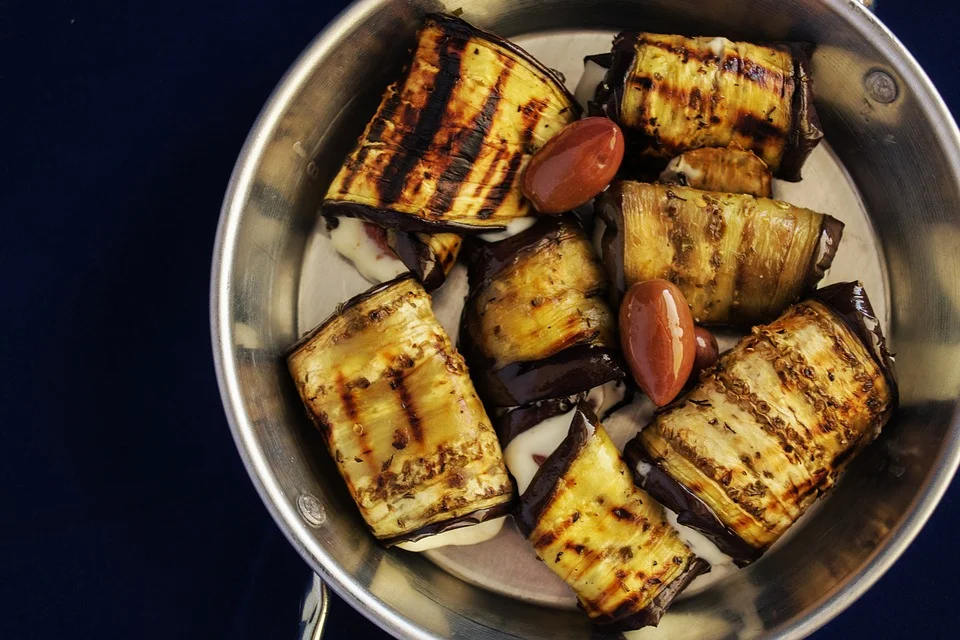

Eingelegte Auberginen

Zutaten
- 3 Auberginen
- Salz
- 10 EL Olivenöl
- 5 Zehen Knoblauch
- Kräuter (Oregano, Basilikum, Petersilie
- 1 Schuss Sojasauce
- Maggi
- Zitronensaft
- Muskat
Zubereitung
- Die Auberginen in 5mm dicke Scheiben schneide, salzen und ziehen lassen (bis sich Tropfen bilden).
- Mit Küchenpapier trocken tupfen und die Scheiben in Olivenöl von beiden Seiten goldbraun anbraten.
- Für die Sauce die restlichen Zutaten vermischen und abschmecken.
- Die gebratenen Auberginenscheiben in die Sauce geben und abgedeckt 24 Stunden im Kühlschrank ziehen lassen.